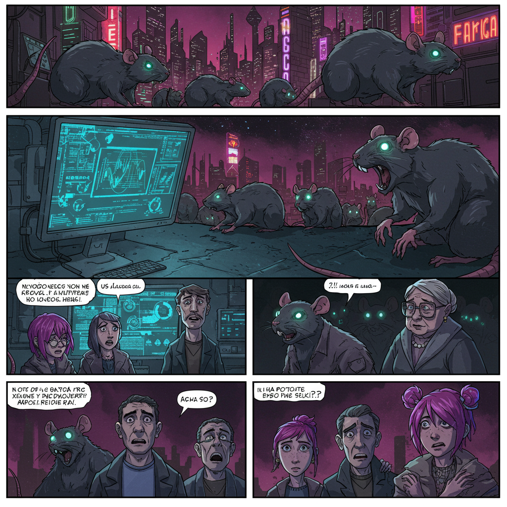
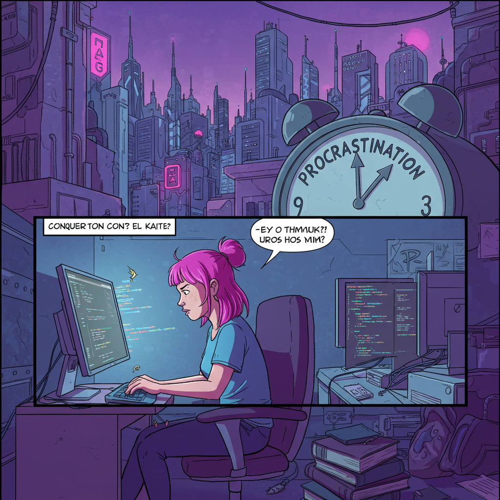
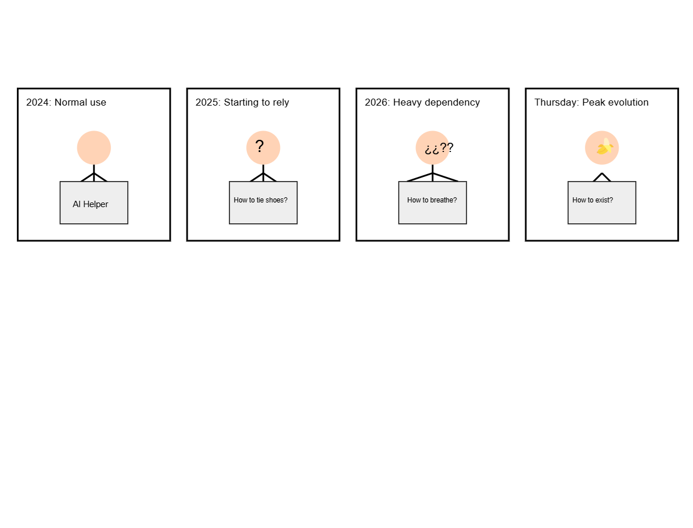

¡A puñetazo limpio por el sillón!
Dos políticos de renombre, cuyos nombres no mencionaremos para no darles más publicidad de la que merecen, han decidido resolver sus diferencias a la antigua usanza: ¡en el ring! El famoso "Dogfight Wild Tournament" de Jordi Wild será el escenario de esta épica batalla por el poder. Las apuestas están en rojo vivo, ¿quién se llevará el gato al agua? ¿El candidato del partido del puño en alto o la candidata del partido de la sonrisa fingida? Lo que está claro es que el espectáculo está garantizado, ¡y la vergüenza ajena también!

La inteligencia artificial nos dominará... ¡pero las ratas antes!
Un estudio reciente ha revelado que la inteligencia artificial está a punto de alcanzar un hito histórico: ¡superar la inteligencia de las ratas! Los expertos aseguran que la IA será capaz de resolver problemas complejos, tomar decisiones estratégicas y, probablemente, hasta escribir mejores discursos políticos que nuestros líderes actuales. Sin embargo, advierten que las ratas aún conservan una ventaja: ¡son más resistentes a la radiación! ¿Será este el factor determinante en la inevitable guerra entre humanos y máquinas? ¡Solo el tiempo (y las cucarachas) lo dirán!

¡Deja de procrastinar y programa!
Si quieres aprender a programar, deja de buscar excusas y ¡ponte a teclear! La procrastinación es el enemigo número uno de los futuros programadores. Deja de ver tutoriales interminables, de leer libros aburridos y de buscar la fórmula mágica para aprender a programar sin esfuerzo. La única forma de dominar el código es ¡escribiendo código! Así que abre tu editor de texto, inspírate en el meme de "This is fine" y ¡empieza a programar! Recuerda, Roma no se construyó en un día, ¡pero tu página web sí puede!

¡La humanidad en declive y ChatGPT como nuestro nuevo cerebro colectivo!
¿Recuerdan la curva de Flynn, esa gráfica que nos mostraba cómo la inteligencia humana no paraba de crecer? Pues olvídense de ella, porque ahora tenemos la curva de Flynn invertida, una representación de cómo nuestras capacidades cognitivas están en caída libre. ¿La razón? ¡ChatGPT, por supuesto!
Este modelo de lenguaje de inteligencia artificial se ha convertido en nuestro nuevo cerebro colectivo. ¿Para qué pensar si podemos preguntarle a ChatGPT? ¿Para qué razonar si él tiene todas las respuestas? La ironía es que, mientras más dependemos de la IA, más estúpidos nos volvemos.
Pero no se preocupen, ¡no todo está perdido! Siempre podremos usar ChatGPT para escribir artículos sobre la inversión de la curva de Flynn y el auge de ChatGPT. ¡Es como un bucle infinito de estupidez!
Y tú, ¿qué prefieres? ¿Pensar por ti mismo o dejar que ChatGPT lo haga por ti? ¡La respuesta está en tu interior... o quizás en Google!